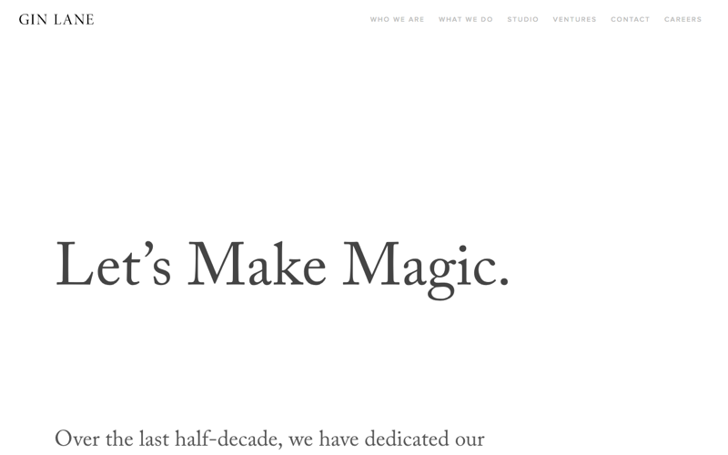
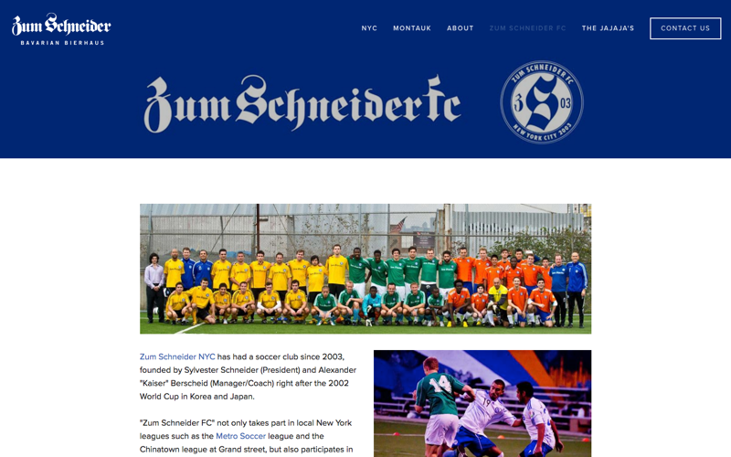

Tulga is a New York-based product designer, currently working at Gin Lane. He has studied UX Design at General Assembly and has worked in the fields of UX/UI and Interaction Design for the past two years. He is passionate about designing clean, minimal user interfaces and engaging interactive experiences that push technological and aesthetic boundaries. On his downtime, you can find him playing soccer for his club, Zum Schneider FC.
Get In Touch